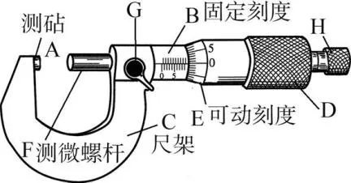

G11物理课件
精密测量仪器与电路内阻详解
游标卡尺基本原理
游标卡尺是一种精密测量长度工具，由主尺和游标组成，利用游标分度与主尺分度的微小差值来提高测量精度。

游标卡尺实物图
游标卡尺读数公式
L = L主 + n × ΔL
其中：
- L主 - 主尺读数
- n - 游标对齐刻度
- ΔL - 游标卡尺的最小分度值
使用技巧
- 10分度游标卡尺精度为0.1mm
- 20分度游标卡尺精度为0.05mm
- 50分度游标卡尺精度为0.02mm
- 读数时不需要估读
- 测量前要检查零点误差
- 测量力度要适当
读数步骤详解
步骤1：确定整毫米数
读取主尺上游标零线左侧的整毫米数
步骤2：观察游标对齐
找到游标上与主尺对齐的刻度线
步骤3：计算游标读数
对齐刻度 × 精度 = 游标读数
步骤4：得出最终结果
主尺读数 + 游标读数 = 测量值
螺旋测微器基本原理
螺旋测微器（千分尺）利用螺旋放大原理，将测微螺杆的微小旋转转换为较大的直线位移，从而实现精密测量。

螺旋测微器结构示意图
.webp)
螺旋测微器实物图
螺旋测微器读数公式
L = L固 + L可
L固 = L主 + 0.5mm（如果超过半格）
L可 = n × 0.01mm
其中：
- L固 - 固定套管读数
- L可 - 可动刻度读数
- n - 可动刻度对齐格数
注意事项
- 精度为0.01mm，需要估读到0.001mm
- 测量前要检查零点误差
- 测量时用力要适当
- 读数时要注意半毫米线
- 使用棘轮装置控制力度
- 避免温度影响测量精度
常见错误与纠正
错误1：忽略半毫米线
纠正：仔细观察半毫米线是否露出
错误2：读数时忘记估读
纠正：要估读到0.001mm
错误3：零点误差未校正
纠正：测量前先校准零点
错误4：测量力度不当
纠正：使用棘轮装置控制力度
电源内阻概念
电源内阻是指电源内部的等效电阻，它会影响电源的输出特性。当电源接入电路时，内阻会分担一部分电压，导致输出电压降低。
.webp)
直流电路原理图
电源与负载组成的闭合回路.webp)
U-I特性曲线
路端电压随电流变化关系闭合电路欧姆定律
I = ℰ/(R + r)
U = ℰ - Ir
其中：
- ℰ - 电动势
- R - 外电路电阻
- r - 内阻
- U - 路端电压
- I - 电路电流
内阻测量方法
方法一：伏安法
- 测量不同外电阻下的电压和电流
- 绘制U-I图像
- 图像斜率的绝对值即为内阻 r = |ΔU/ΔI|
方法二：半偏法
- 调节变阻器使电压表读数为电动势的一半
- 此时外电阻等于内阻 R = r
- 读取变阻器阻值即为内阻
U-I特性曲线模拟
6.0 V
1.0 Ω
内阻对电路的影响
输出功率最大条件 - 详细推导
第一步：建立功率表达式
P出 = I²R
根据闭合电路欧姆定律：I = ℰ/(R+r)
P出 = (ℰ/(R+r))² × R = ℰ²R/(R+r)²
第二步：数学分析（求极值）
将功率表达式看作关于外电阻R的函数：
P(R) = ℰ²R/(R+r)²
对R求导数并令导数为零：
dP/dR = ℰ²[(R+r)² - 2R(R+r)]/(R+r)⁴ = 0
(R+r)² - 2R(R+r) = 0
R² + 2Rr + r² - 2R² - 2Rr = 0
-R² + r² = 0
R² = r²
R = r （R > 0，r > 0）
第三步：验证极值性质
求二阶导数判断极值性质：
d²P/dR² = -2ℰ²r²/(R+r)⁴
当R = r时，d²P/dR² = -2ℰ²r²/(2r)⁴ = -2ℰ²r²/16r⁴ = -ℰ²/8r² < 0
二阶导数小于零，说明R = r时功率取得极大值。
第四步：计算最大功率值
将R = r代入功率表达式：
Pmax = ℰ²r/(r+r)² = ℰ²r/(2r)² = ℰ²r/4r²
Pmax = ℰ²/4r
结论
✅ 当外电阻等于内阻时，电源输出功率达到最大值
✅ 最大功率为：Pmax = ℰ²/4r
✅ 此时电源效率为50%
电源效率
η = R/(R + r) × 100%
当 R >> r 时，效率接近100%
知识测试
问题1：50分度游标卡尺的精度是多少？
问题2：螺旋测微器的精度是多少？
问题3：电源输出功率最大的条件是？
问题4：闭合电路欧姆定律的表达式是？
学习成果
开始答题查看你的学习成果！